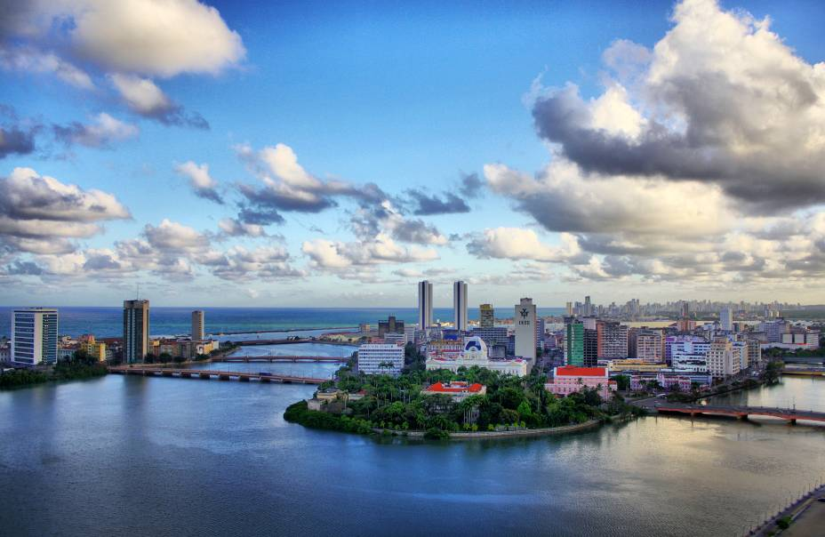

A invasão de Recife
Os holandeses juntaram forças para um ataque a Recife e Olinda para retomar o seus planos, contando com 65 embarcações e 7280 homens. Este poderoso exército (o maior já visto na colônia) ficou sob o comando do almirante Hendrick Lonck, o qual liderou o ataque Pernambuco em fevereiro de 1630 e conquistou Olinda e Recife. O objetivo da Holanda era restaurar o comércio de açúcar com os Paises Baixos, proibido pela Coro da Espanha, e expandir sua colônia para ampliar sua economia.

Desenvolvimento de recife
O alemão Maurício de Nassau foi contratado para ser o governador geral da Colônia Holandesa e durante a sua administração buscou ter um governo legitimado pelos colonos, então capiteneou um expressivo projeto de reforma urbanística na mais atual capital colônia da época, Recife. Para instituir essa modernização, Nassau ordenou a realização de diversas contruções de fundamental importância, como canais, diques, pontes, ruas e também drenou certas áreas da cidade. Como resultado, ocorreu um maior desenvolvimento na cidade de Recife do que em comparação a tantas outras. Além de se preocupar com a infraestrutura, Maurício de Nassau investiu em ciência e artes por meio do incentivo para que arquitetos, professores, intelectuais e artistas viessem ao Brasil.

O fim da capital holandesa, Recife
Quanto mais se aproximava o fim da Colônia Holandesa, mais os holandeses recuavam. Até que em 1654, chegou um momento que a colônia se restringia ao Recif e muito em breve os portugueses reconquistariam tudo. As marcas da colônia ficaram em Recife até hoje, a fazendo uma cidade diferente das outras. Podemos ver o quanto que foi investido naquela época e que Recife até hoje emana beleza e força.
